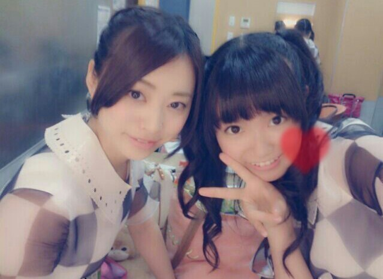
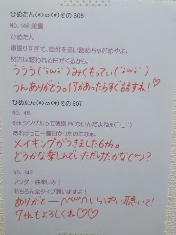

| 2013/09 17 Tue | ひめたん(*>ω<*)そ の343 |

ねねころ (伊藤寧々ちゃん) ひめたん
うしろにうつってるココちゃんは
かなりん (中田花奈ちゃん)のだね！
そうそう、ジャケットともいっこ
この秋にゲットしたいのが
グレーのベレー帽。
りぼんには負けるけどベレー帽すきなのー(〃ω〃)
ベレー帽似合う女子になりたいのー
ほら秋らしい色のワンピースと
一緒に来たら絶対可愛いでしょ？そうでしょ？
近々ゲットしてくるねー
ままーお買い物行こー
今日のブログは序盤
おにゃーのこ全開トークになってしまう。
おにゃのこちゃんはにこにこ聞いてくれるかな
おとこのこさんは......
にこにこ聞いて、くれるといいなっ
あっ乃木どこのこととか
ほかにもいっぱいお話するから
お願いだからUターンしないで( ^ω^ )威圧
それがねーもうねー今めちゃショックなのがー
JILLのチークが粉砕したのー！
もうーめーちゃ気に入ってたのにー！！
チークのふたパカッて開けた瞬間ね
お粉になって さらさらーってでてきたのー
お気に入りだったのにー悲しいよおー
だからね、
チークもね近々買い換えなきゃなんだけどね
今ちょっと冒険したい気分で悩んでるんだよね
おにゃーのこちゃんのみなさん
よかったらおすすめのチーク教えてー ！
！
あっそうそうもうひとつ事件があって
もう今年一番の大事件って断定できるような事件で
なんと、
川後P (川後陽菜ちゃん)が
乃木ここでいってた薄汚いあのりぼんが
(あ、ひめたんは汚いって認めてないからねっ)
コレクションの中で
いちばーんお気に入りだったあのりぼんが
まっしろでモコモコしてたあのりぼんが
２年間一緒に歩んできたあのりぼんがっっっっ
なんと......
ままに捨てられた(・∀・)ちーん
これを知ったあたしは
深夜に大・発・狂☆ですよ ちっとも話盛ってないよ
もう笑い事じゃなくてまじにヘコんでるのよー
大切なおともだちが
引っ越してしまったときみたいに
心が空っぽでもう......
自分やっぱし りぼん大好きなんやなって
改めて気づいた事件でした
ままいわく
「汚い。洗ったってもう手遅れだ」とのこと←
川後Pに報告したら
ままぐっじょぶ(・∀・)bと言われてしまった
川後P......
い、いつまでもくよくよしてても
しゃーないので
とりあ切り替えます(´;ω;｀)

やんきーひめたん☆ちぇけらっ
ヘアがステキなことになっております
全然怖くなかったよって？
ありがとう
前回の乃木どこは全員集合回でした！
ご家族さんからの密告は怖いねー♪
次週もなかなか面白いはずだよー
そうそれで、バナナマンさんの後輩さんが
ひめたん推しだって話が
番組の中で出てましたが
いやー番組収録には
時系列にズレが出てくるんですねー
そいで、そのお方がZepp Nambaに
来てくださったんですって
ブログで前に書いたんだけどね
番組収録はちょうどその
数日前だったのよ(｀・ω・´)
だからそのお話の直後に
お会いできたってことになるんです！
嬉しす////
ひめたんままはちょっと
厳しいこともあります
ただね？
ルックスって言われてしまいましたが
ひめたんは姉妹でいちばん まま似だ(｀・ω・´)
ねねころ (伊藤寧々ちゃん) ひめたん
うしろにうつってるココちゃんは
かなりん (中田花奈ちゃん)のだね！
そうそう、ジャケットともいっこ
この秋にゲットしたいのが
グレーのベレー帽。
りぼんには負けるけどベレー帽すきなのー(〃ω〃)
ベレー帽似合う女子になりたいのー
ほら秋らしい色のワンピースと
一緒に来たら絶対可愛いでしょ？そうでしょ？
近々ゲットしてくるねー
ままーお買い物行こー
今日のブログは序盤
おにゃーのこ全開トークになってしまう。
おにゃのこちゃんはにこにこ聞いてくれるかな
おとこのこさんは......
にこにこ聞いて、くれるといいなっ
あっ乃木どこのこととか
ほかにもいっぱいお話するから
お願いだからUターンしないで( ^ω^ )威圧
それがねーもうねー今めちゃショックなのがー
JILLのチークが粉砕したのー！
もうーめーちゃ気に入ってたのにー！！
チークのふたパカッて開けた瞬間ね
お粉になって さらさらーってでてきたのー
お気に入りだったのにー悲しいよおー
だからね、
チークもね近々買い換えなきゃなんだけどね
今ちょっと冒険したい気分で悩んでるんだよね
おにゃーのこちゃんのみなさん
よかったらおすすめのチーク教えてー
！
あっそうそうもうひとつ事件があって
もう今年一番の大事件って断定できるような事件で
なんと、
川後P (川後陽菜ちゃん)が
乃木ここでいってた薄汚いあのりぼんが
(あ、ひめたんは汚いって認めてないからねっ)
コレクションの中で
いちばーんお気に入りだったあのりぼんが
まっしろでモコモコしてたあのりぼんが
２年間一緒に歩んできたあのりぼんがっっっっ
なんと......
ままに捨てられた(・∀・)ちーん
これを知ったあたしは
深夜に大・発・狂☆ですよ ちっとも話盛ってないよ
もう笑い事じゃなくてまじにヘコんでるのよー
大切なおともだちが
引っ越してしまったときみたいに
心が空っぽでもう......
自分やっぱし りぼん大好きなんやなって
改めて気づいた事件でした
ままいわく
「汚い。洗ったってもう手遅れだ」とのこと←
川後Pに報告したら
ままぐっじょぶ(・∀・)bと言われてしまった
川後P......
い、いつまでもくよくよしてても
しゃーないので
とりあ切り替えます(´;ω;｀)
やんきーひめたん☆ちぇけらっ
ヘアがステキなことになっております
全然怖くなかったよって？
ありがとう
前回の乃木どこは全員集合回でした！
ご家族さんからの密告は怖いねー♪
次週もなかなか面白いはずだよー
そうそれで、バナナマンさんの後輩さんが
ひめたん推しだって話が
番組の中で出てましたが
いやー番組収録には
時系列にズレが出てくるんですねー
そいで、そのお方がZepp Nambaに
来てくださったんですって
ブログで前に書いたんだけどね
番組収録はちょうどその
数日前だったのよ(｀・ω・´)
だからそのお話の直後に
お会いできたってことになるんです！
嬉しす////
ひめたんままはちょっと
厳しいこともあります
ただね？
ルックスって言われてしまいましたが
ひめたんは姉妹でいちばん まま似だ(｀・ω・´)

 ひめたんが思う乃木坂イケメンランキング
ひめたんが思う乃木坂イケメンランキング
ベスト３を教えて
5thのシャキイズムのときに
若月(男)となーちゃん(男)に囲んでもらったときは
もうー盛大に照れました///
数ヶ月前のブログに写めあるから探してみてー♪
あとは万理華(男)ともいちゃいちゃしたー///
あれ質問って何でしたっけ
運動会が近くて応援やってるんやけど、
自分は結構声出してるつもりなのに
もっと出せって言われるんやけどどーしたらいい？
もう運動会の季節かあー
うーんあんまり無理はしてほしくないなあ
お腹から声でるように意識してみたら
ちょっとかわるかも( ∀ )
バイトの面接決まったけん、
お祝いして っ
やったあーおめでとー(*^ω^*)/
お仕事応援してるね！
でも無理しないでね、あとしっかり寝るんよー
自分の興味があるお店でお仕事できるのって
ステキなことだよね＊
ひめたんヘアーはいつ頃から始めたの？
乃木坂に入る前からね
自分で結ぶときはハーフアップかツインだったの
そんで乃木坂になってから
全部巻いたり全部ストレートにしたり
いろいろして今のひめたんヘアに落ち着いた☆
あっこれ真面目な話なんだけどさー
最近夜になっても寝つけなくて
もうほんとに困ってるのねー
それでおともだちに相談したのー
夜寝れないんだけどさって。
そしたらねアドバイスくれたんだ↓
「授業中寝るのやめなよ(笑)」

......(＊´・ω・＊)
コメント(309)
2013/09/17 23:54